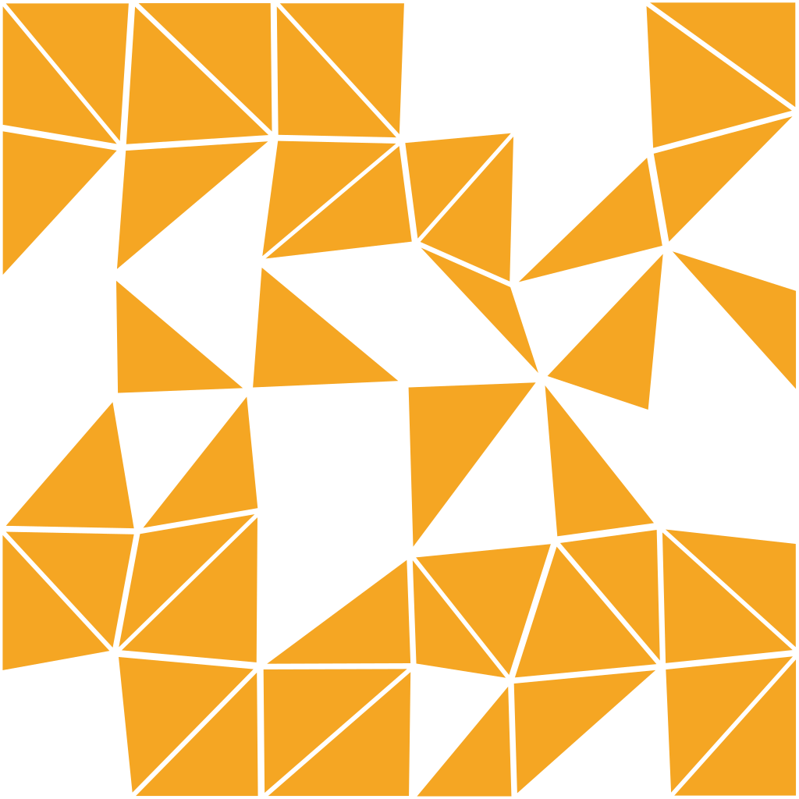

TagwerkYour healthy life, in one app
Lift, eat well and keep good daily habits. Tagwerk plans it, tracks it and coaches you: a coach that sets your next weight and pace from what you did.
It's for you if you
- lift 2 to 4 days a week in a gym, with Tagwerk's program or your own routine;
- want to eat to a daily kcal and protein target;
- will keep a short list of daily habits.
It's not for
- browsing workouts or meal plans, strict diets, or competition training;
- injuries, rehab, pregnancy or medical conditions;
- anyone for whom counting food feels unhealthy.
Price
The first 7 days are free, with no account needed and nothing to cancel: the free week never turns into a paid subscription by itself. After that, €10 a week or €100 a year, through the App Store. iPhone only, in English.
Tagwerk is built by Stonefield Sp. z o.o. It's not medical advice.